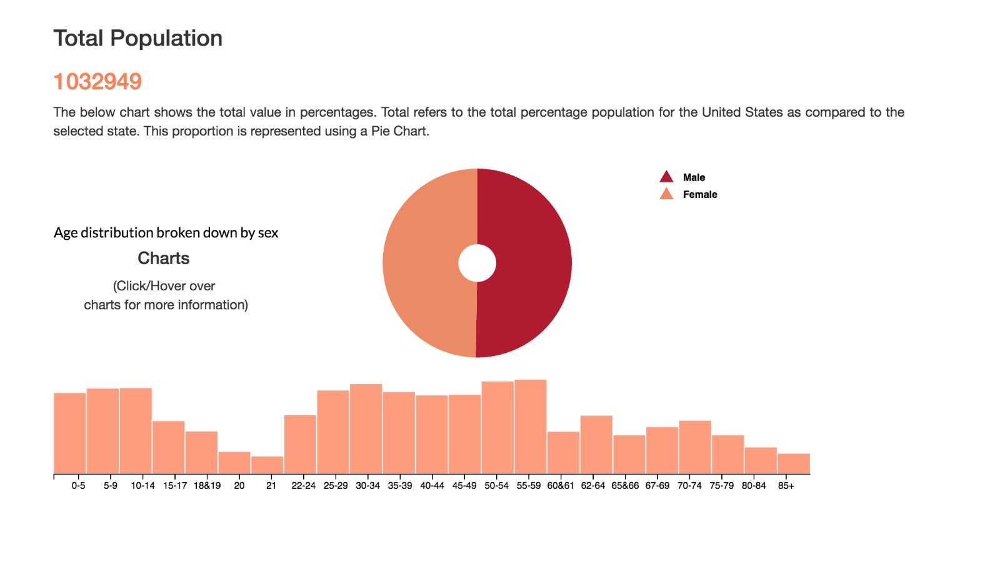

This project aims to visualize 13 variables of population and census data using a combination of choropleths, bar charts, pie charts, scatterplots and multiple maps. We have provided users with the ability to view the variable distribution of all states or the ability to select a state and obtain detailed information of different variables for each state. Our analysis has provided the following insights. The native population is highest in southern states such as New Mexico, Texas, Oklahoma & Arizona. A quick google search revealed that the region of Oklahoma had settled occupation that dates back to a previous time in history. This can be attributed to high number of natives in this region. Hopefully by using this visualization you can help us gather further insights into the data.
Our first step was to define a clear objective - How will our visualization help users understand the data? The data visualized in this project is the 2015 American Census census information that includes demographic info, household income, living arrangement, education, means of transportation, travel time and so on. Sketching out the overall layout of the pages, identifying charts to best represent data was a great starting point. We used the cheat sheet, online resources and textbooks to help identify the appropriate charts for the variables. For example, we represented the variable Race with a pie chart to show the diversity of ethnicity in any given state. This composition gave us insight into the division of each group as a simple share of the total population. We followed a similar process for the remaining variables.
Fig 1. Sketches of our initial analysis of correlated variables and appropriate charts for visualization.
After we had brainstormed the overall plan, and identified the types of charts required for each variable, our initial sketches toyed with several navigation ideas. Sketching this initial page layout helped inform our final navigational flow. Plotting the choropleth map gave us a rough idea of the real estate available for placement of several other charts. We iterated heavily before jumping to code - starting with a selection bar for thirteen variables, radio buttons to switch between the “State” and “County”. These iterations helped us converge to a single selection bar with clearly labeled values. The rationale was that reduced number of choices minimized the cognitive load on the user. We picked a sequential color scheme from “Colorbrewer”, to represent the different value on the legend. These colors were carefully selected after ensuring it was W3C compliant.
Fig 2. User had to scroll horizontally to get the details of age distribution broken down by sex.
Building steadily from the previous stage, we gathered that age distribution broken down by sex when represented as a bar chart did not show the data meaningfully. For instance, the user had to scroll horizontally across the years to get the associated values. Following the design principle: overview first, zoom and filter and details on demand, we decided to place the bar chart below the pie chart. This simple change in visualization allowed the user to view the entire data for the given variable at a glance.
Fig 3. User had to scroll horizontally to get the details of age distribution broken down by sex.
Fig 4. Placing the bar chart below the pie chart allowed users to get info on age distribution broken down by sex at a glance.
In the process of data visualization, we understood the dataset deeper and figured out the collations between variables. We want to present more related information of each single variable. For instance, when one state is selected, the related demographic information would show in the same interface as also. Another idea is, we hope to provide a opportunity to let users compare the data of any two states they interested. So we developed the “COMPARISON” page. In this page, two choropleth maps layout side by side. We the user select states, the maps would zoom in and show the respective data below the maps. It would be an efficient way for the users to compare the data of different states.
Fig 5. Sketches of our processing analysis of correlated variables and appropriate charts for visualization.
After the initial coding of the project was complete, we iterated upon the designs on every element on the UI. With each iteration, we learned more about the correlation between the data. Armed with this new knowledge, we refined our designs still further to finally come up with our present day version version.
The small multiple map showcased interesting trends present in the US census data. For instance, the native population is highest in southern states such as New Mexico, Texas, Oklahoma & Arizona. A quick google search revealed that the region of Oklahoma had settled occupation that dates back to a previous time in history. This may be attributed to one of the reasons the high number of natives living in Oklahoma.
Further analysis revealed the African American population - largest group in racial minority, was concentrated more towards the southern states of Georgia, Florida, Virginia. If we look to history, we find that slaves from Africa were brought to the southern states for work on plantations. It is clear from our data, that even though this group has migrated to other areas, majority of them still find themselves living in the southern states.